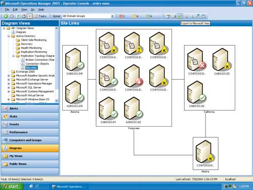

Андрей Колесов
До недавнего времени корпорация Microsoft (http://www.microsoft.com) практически не фигурировала в числе поставщиков средств управления ИТ-инфраструктурой. Однако этот сегмент ИТ-рынка в последние годы быстро растет, что, в свою очередь, отражает увеличение его значимости для заказчиков. Как следствие, и Microsoft стала уделять существенно больше внимания данному направлению, тем более, что это вполне соответствует общей логике развития технологий и бизнеса компании. В этой статье мы рассмотрим два ключевых вектора деятельности корпорации в данной области - методологию управления лицензиями на ПО и средства управления вычислительными ресурсами.
Управление лицензиями на ПО
Зачем нужно управление лицензиями
Еще несколько лет назад основные статьи ИТ-бюджета российских заказчиков были связаны с приобретением техники. Но ситуация меняется, и сегодня практика отечественных предприятий быстро приближается к общемировым показателям, когда на долю ПО приходится не менее половины (а то и существенно больше) выделяемых на компьютеризацию средств. Конечно, определенную роль в этом играли и играют усилия поставщиков ПО, направленные на борьбу с софтверным пиратством в нашей стране (в том числе на уровне корпоративных пользователей). Но главными факторами все же, очевидно, следует считать общий рост значимости ПО для успешной деятельности компаний и тот факт, что собственно разовые затраты на покупку программ становятся по крайней мере соразмерны расходам на их поддержку и сопровождение.
Учитывая все эти тенденции, корпорация Microsoft, несколько снизив свою активность в деле юридической борьбы с пиратами, перенесла акцент на вопросы оптимизации затрат заказчиков на ПО. Причем если сначала речь шла в основном о выборе наиболее подходящих схем покупки программных продуктов, то сейчас эта тема трансформировалась в идею необходимости комплексного подхода к управлению затратами на ПО на протяжении всего его жизненного цикла (покупка, развертывание, обновление, поддержка и т. д.).
Один из важнейших элементов воплощения данной концепции - вопросы управления лицензиями на ПО, для решения которых Microsoft разработала методологию Software Assets Management (SAM). Для ее продвижения в нашей стране еще в 2003 г. корпорация запустила специальную маркетинговую программу "Управление лицензиями в организации", которая включает в числе прочего вопросы легализации ПО и обучение ИТ-менеджеров компаний-заказчиков с широким участием партнеров Microsoft.
Рассматривая основные положения SAM (http://www.microsoft.com/rus/licensemanagement), нужно сразу подчеркнуть, что речь идет о технологии, не зависящей от конкретного поставщика ПО. Ключевая идея SAM заключается в том, что управление лицензиями рассматривается как составная часть постоянной работы по управлению ИТ-активами организации и имеет своей целью повышение эффективности работы предприятия в целом.
В качестве базового положения SAM выступает тезис о необходимости использования легального ПО, иначе, собственно, и нет объектов управления - лицензий. Здесь выделяют три основные группы рисков:
- юридические риски - возможность существенных потерь, начиная от временных и денежных и заканчивая уголовной ответственностью за нарушение авторских прав;
- деловые - обширный список бизнес-потерь, включая падение престижа компании, потерю доверия со стороны партнеров и клиентов и снижение рыночной стоимости предприятия;
- технологические - снижение надежности работы информационной системы организации из-за использования некачественного ПО.
Однако решительный отказ от пиратского ПО - это только первый шаг. Дальше следует приступить к наведению порядка в софтверном хозяйстве, которое зачастую характеризуется целым букетом проблем, а именно:
- использование устаревших версий ПО;
- несовместимость данных;
- отсутствие внутренних стандартов;
- неразбериха с учетом;
- незнание и неиспользование программ корпоративного лицензирования;
- бесконечная "борьба" за ИТ-бюджет;
- постороннее ПО на рабочих местах;
- вирусы;
- непредвиденные простои;
- зависимость от "знатоков"
Отдельно нужно упомянуть проблему защиты от внутренних и внешних угроз, решение которой требует, в частности, регулярного обновления ПО (Security Updates) в рамках всей ИТ-инфраструктуры компании.
Таким образом, можно выделить три главные причины, по которым необходимо управлять лицензиями на ПО. Во-первых, слабое управление ПО или отсутствие такого управления приводит к тому, что компании не используют всех возможностей данного ПО, что снижает общую эффективность бизнеса. Во-вторых, предприятия совершают бессистемные траты на приобретение и обслуживание ПО, поскольку не занимаются его учетом и планированием расходов и не имеют инструментов анализа его использования. И наконец, организации подвергают себя риску нарушения авторских прав из-за отсутствия системы контроля над распространением ПО внутри организации, а также правил и процедур его приобретения и использования персоналом.
Для российского рынка принципиально важен тот факт, что отечественные компании в целом созрели для последовательной работы по управлению своей софтверной инфраструктурой. Об этом, например, свидетельствуют результаты исследования "Эксплуатация систем ПО в российских компаниях среднего бизнеса", проведенного аналитическим агентством "РОМИР-Мониторинг" в 2004 г. (см. врезку "ПО как актив российских предприятий").
ПО как актив российских предприятийАналитическое агентство "РОМИР-Мониторинг" (http://www.monitoring.ru) провело в 2004 г. исследование под названием "Эксплуатация систем ПО в российских компаниях среднего бизнеса", главной задачей которого была оценка уровня развития практики применения программных средств в деятельности отечественных предприятий как инструмента и составной части бизнеса, изучение роли ПО в деловых процессах, а также определение отношения руководителей организаций и ИТ-подразделений к таким аспектам применения ПО, как использование лицензионных продуктов, финансовое планирование расходов на ПО и анализ рисков, связанных с применением ПО. В исследовании участвовало 100 компаний из пяти городов России (Москва - 40, Санкт-Петербург - 24, Ростов-на-Дону, Нижний Новгород и Новосибирск - по 12). Опрашивались по два человека от каждой компании - представитель дирекции (финансовый директор или другое лицо, принимающее решения о расходах на ИТ-инфраструктуру) и руководитель ИТ-подразделения. Полный вариант отчета можно найти по адресу http://www.monitoring.ru/products/free/it, мы же остановимся только на наиболее важных, на наш взгляд, моментах. По мнению директоров, главная роль в принятии решения о выделении средств на покупку и внедрение ПО принадлежит первым лицам компаний: 72% опрошенных указали, что в этом процессе непосредственно участвуют генеральный и финансовый директора, 50% - начальники ИТ-отделов. Как основные причины финансовых затрат назывались недостатки существующего ПО (54% респондентов), расширение числа рабочих мест (53%) и повышение эффективности бизнес-процессов (44%). Важным фактором оказалось также улучшение финансовых показателей компании в целом по результатам данных затрат. В одной трети компаний планирование затрат на ПО просто отсутствует, средства выделяются по мере необходимости, хотя правильным такой подход признают только 9% директоров. Большинство руководителей предприятий (45%) считают оптимальным вариантом выделение отдельного раздела в годовом бюджете ИТ-отдела с детализацией затрат (сейчас это реализуется лишь в 25% случаев). По мнению 90% респондентов, имеющееся в организациях ПО используется достаточно эффективно, хотя большинство из них считает, что есть куда развиваться. В качестве основных мер повышения стабильности и надежности имеющегося ПО ИТ-руководители называют в первую очередь необходимость обучения пользователей (69%), расширение штата ИТ-сотрудников или повышение квалификации своих работников (50%), замену ПО на более эффективное (42%), а также использование лицензионного ПО (30%). Довольно любопытная информация содержится в ответах на вопросы о том, чем в действительности (а не по служебным инструкциям) чаще всего занимаются ИТ-подразделения. Отметим, что оценки распространенности тех или иных работ у директоров и ИТ-руководителей порой заметно расходятся: так, задачи приобретения аппаратных и программных средств назвали соответственно 44% и 37% респондентов, настройку ПО - 28% и 35%, защиту от вирусов и хакеров - 33% и 28%, поддержку сайта компании - 10% и 17%, разработку собственного ПО - 9% и 16%. Стоит еще обратить внимание на то, что хотя разработка ПО и сборка компьютеров не входит в число первоочередных задач ИТ-подразделений, этими работами занимается две трети опрошенных компаний. В то же время наибольшие трудности в работе ИТ-подразделений, по мнению их руководителей, вызывают обучение и поддержка пользователей (30%). Большинство респондентов отметили факт влияния используемого ПО на общий имидж организации (49% сочли его значительным, 34% - заметным, но не очень большим). Здесь в первую очередь выделяются угроза невыполнения деловых обязательств (это особенно волнует директоров - 69%), возможность сертификации по различным стандартам (30%), повышение рыночной стоимости компании (29%) и возможность интеграции в более крупные бизнес-структуры (23%). Последняя группа вопросов была связана со стоимостью и лицензированием ПО. Сама цена оказалась важным, но все же не решающим фактором при выборе программных продуктов. И все же вопрос о стоимости лицензий уже используемого ПО вызвал явное замешательство среди респондентов: более половины из них просто не смогли дать ответ. Практически все опрошенные признают, что применять лицензионные продукты более целесообразно по сравнению с нелицензионными. Однако почти четверть респондентов (среди ИТ-руководителей - треть) считают, что это оправдывается только юридическими рисками в связи с использованием пиратских копий. В то же время около 40% уверены, что стоимость лицензий окупается преимуществами, которое дает легальное ПО: наличие технической поддержки назвали 32%, надежность работы - 24%, отсутствие юридических рисков - 23%. Подавляющее большинство участников опроса положительно оценили роль технической поддержки и других сервисов, представляемых поставщиками ПО. Однако почти половина респондентов считают, что это помогает лишь на этапе установки и настройки программ, а также при решении небольшого круга стандартных проблем; впрочем, многие уверены, что помощь вендоров позволяет устранять трудности на всех этапах эксплуатации ПО (23%) и даже повысить эффективность его применения (18%).
|
Методология управления лицензиями
Характерно, что именно первые лица организации все чаще ощущают необходимость улучшения общего контроля за ИТ-хозяйством предприятия. В то же время не слишком многие из них (да и не все руководители ИТ-департаментов) четко представляют себе, как это реализовать. SAM дает ответы на такие вопросы, выделяя следующие ключевые моменты: необходимость проведения регулярной инвентаризации, введение стандартов и процедур предприятия, централизация всех аспектов управления лицензиями (закупка, хранение, развертывание, обновление, техподдержка и т. д.).
Конкретная реализация этих идей насчитывает пять основных шагов (см. врезку " Пять этапов внедрения управления лицензиями"). Подробно методика SAM изложена в материалах Microsoft, а здесь мы остановимся лишь на наиболее важных ее моментах.
Пять этапов внедрения управления лицензиями1. Сбор необходимой информации Изучите технологию управления лицензиями на ПО и соберите информацию, необходимую для внедрения такого управления. Следует уточнить важные инфраструктурные и организационные аспекты деятельности вашей организации, а также выяснить, существует ли в ней политика в области закупки и использования ПО. 2. Инвентаризация установленного ПО Выясните, какие программы установлены в организации, подсчитайте число копий, установленных на используемых в организации настольных ПК, на ноутбуках и серверах. Инвентаризацию можно провести как вручную, так и с помощью специальных программ (при условии, что компьютеры подключены к сети предприятия). Бесплатно распространяемый программный продукт для инвентаризации ПО можно загрузить по адресу http://www.microsoft.com/rus/licensemanagement/msia/, каталог продуктов для инвентаризации ПО и управления лицензиями других производителей - http://www.microsoft.com/resources/sam/sit/default.asp. 3. Сопоставление лицензий и ПО Сравните число установленных программ с числом приобретенных лицензий. Так можно обнаружить недостающие лицензии и инициировать их приобретение или обнаружить лишние и принять решение о том, что с ними делать. 4. Разработка стратегического подхода и практических процедур Выясните, каковы существующие правила (если они есть) приобретения, установки и использования ПО. Разработайте или усовершенствуйте внутренние корпоративные стандарты на используемое ПО, а также имеющиеся правила и процедуры. Требования к стандартам, правилам и процедурам зависят от особенностей конкретной организации. Но как минимум необходимо учесть следующее: в организации должна быть ясная и реализуемая политика в отношении всего используемого ПО, ее положения должны быть понятны и четко определять ответственность за нарушения. Должны быть определены внутренние стандарты, политики и процедуры закупки, установки и эксплуатации ПО. Необходимо письменно закрепить правила подачи заявки на приобретение ПО, ответственных за закупку, список производителей, приобретение продукции которых допускается, процедуры установки ПО, правила пользования программными продуктами и их списания. 5. Разработка плана управления лицензиями Разработайте план дальнейшего управления лицензиями в соответствии с результатами инвентаризации и выработанными стандартами, политиками и процедурами, а затем реализуйте его.
|
Приступая к построению системы управления лицензиями, нужно сначала выяснить, что вам уже известно о своем ИТ-хозяйстве, ответив, в частности, на следующие простые вопросы.
- Сколько у вас настольных ПК, серверов?
- Подключены ли все ваши устройства и серверы к сети?
- Знаете ли вы, какое ПО на них используется?
- Следите ли вы за своими лицензиями на ПО?
Инвентаризацию ПО можно проводить двумя способами - ручным и автоматическим. Первый из них самый трудоемкий, но всегда выполнимый. Второй гораздо более эффективен, но его целесообразно применять, когда компьютеры организации объединены в сеть. Для автоматизированного сбора информации об установленном ПО используются специальные инструменты от различных поставщиков. Сама корпорация Microsoft предлагает для этих целей свое бесплатное решение Microsoft Software Inventory Analyzer 4.0 (MSIA), представленное в том числе и русской версией. Кроме того, компания собрала в единый каталог множество описаний программных продуктов (http://www.microsoft.com/resources/sam), которые помогают проводить инвентаризацию.
При разработке стратегического подхода и практических процедур его реализации нужно учесть порядок приобретения ПО, обучение персонала работе с ним, характер использования программ сотрудниками, размещение носителей и документации, вопросы обеспечения авторского права, в том числе ответственность работников за допущенные нарушения. Крайне полезно выработать внутренние стандарты, создать механизмы централизованного процесса закупок и хранения лицензий, ПО и документации, а также опубликовать правила использования ПО в организации.
План управления лицензиями должен включать в первую очередь регулярную инвентаризацию ПО, что позволяет держать под контролем установку и удаление компьютерных программ, создание и поддержку базы данных об используемом ПО. Необходимо также определить порядок перехода к стандартизации ПО с тем, чтобы в отделах компании использовались одни и те же программные продукты и их версии. Как отдельные пункты нужно внести в план вывод из употребления устаревших компьютеров и программ, а также централизованные закупки лицензий.
Нужно ли вам совершенствовать управление лицензиямиСуществует мини-тест для руководителя ИТ-подразделения компании, включающий пять вопросов.
Если вы не можете с полной уверенностью дать положительные ответы на все эти вопросы, то вам следует ответить "да" на вопрос, вынесенный в заголовок. |
Стратегия управления ИТ-инфраструктурой
В 2003 г. корпорация Microsoft объявила об инициативе Dynamic Systems Initiative (DSI), сформулировав в этой концепции идеологическую базу для развития нового для себя направления - управления ИТ-ресурсами предприятий. Одновременно компания начала формировать семейство соответствующих программных продуктов. Однако конкретные планы ее деятельности в этом направлении до недавнего времени выглядели довольно расплывчато.
Прошедший в середине апреля в Лас-Вегасе (США) форум Microsoft Management Summit 2005 (MMS) внес ясность в эти вопросы. На нем было охарактеризовано общее состояние технологий корпорации в этой сфере и представлены перспективы развития линейки продуктов System Center и методологии Microsoft Operations Framework как важнейших компонентов стратегии DSI.
Концептуально главная направленность DSI заключается в том, чтобы объединить этапы разработки, развертывания и сопровождения приложений, причем особый акцент делается на поддержку обратной связи между ними. В целом эту идею трудно назвать новой, поскольку именно она составляет основу современного подхода Application Life Management. Изюминка DSI в том, что реализация этих идей должна базироваться на технологической основе System Definition Model (SDM), которая будет пронизывать все компоненты вычислительной инфраструктуры Microsoft (ОС, приложения и сервисы), обеспечивая унифицированное автоматизированное управление ими на протяжении всего их жизненного цикла.
Продукты для управления ИТ-инфраструктурой
Еще в середине 90-х годов Microsoft выпустила продукт System Management Server (SMS), который решал задачи установки и обновления ПО на клиентских ПК. По-видимому, давая ему столь многообещающее название ("Управление системами"), корпорация хотела со временем преобразовать его в комплексное решение для такого управления. Но, несмотря на расширяющуюся функциональность (и растущую популярность у ИТ-персонала), поле применения SMS не вышло в целом за рамки управления рабочими станциями сети.
Фактически реальное освоение сферы управления системами началось в конце 2001 г. с выпуском Microsoft Operations Manager (MOM), предназначенного для работы с серверной инфраструктурой. С тех пор MOM превратился в один из ключевых компонентов всего семейства Windows Server System (о его последней версии 2005, появившейся в конце лета прошлого года, см. "Средство управления операциями MOM 2005", "BYTE/Россия" No 12'2004).
Логика развития MOM выглядит примерно следующим образом: сам продукт включает базовый механизм управления, взаимодействие которого c конкретными серверными решениями поддерживается дополнительными пакетами, выпускаемыми в рамках обновления соответствующих продуктов (см. рисунок). В настоящее время такие пакеты имеются для всех членов семейства; кроме того, уже существует много подобных расширений для приложений и систем третьих фирм.
|  |
| Консоль оператора MOM 2005.
|
Однако разработка собственно технологий наблюдения и управления - это лишь часть работы по созданию эффективно управляемых ИТ-сред. Второй обязательный базовый элемент для решения этих задач - методика оптимальной организации работы ИТ-персонала. Корпорация реализовала его в виде рекомендаций Microsoft Operations Framework (MOF), построенных на платформе IT Infrastructure Library (ITIL).
MOF содержит инструкции по внедрению и эксплуатации MOM 2005. Кроме того, на основе MOF разработаны сводки полезных советов и рекомендаций под названием Solution Accelerators, которые на сегодня включают решения Notification Workflow (процесс уведомлений), Auto-ticketing (автоматическое создание заявок о неполадках), Alert Tuning (настройка оповещений), Service Continuity (непрерывность обслуживания) и Multiple Management Group Rollup (использование нескольких групп управления). Учитывая тот факт, что для эффективного управления и обслуживания всей ИТ-среды организации в целом необходима интеграция средств управления Microsoft с системами управления сторонних производителей, в MOM 2005 включена платформа MOM Connector Framework (MCF). Реализованная на базе Web-сервисов, она обеспечивает обобщенное абстрагирование инфраструктуры оповещений MOM 2005.
В конце 2003 г. Microsoft объявила о намерении объединить в будущем SMS и MOM в одном решении System Center, однако вскоре эта позиция была несколько скорректирована - выяснилось, что под этим названием скрывается целое семейство продуктов для управления ИТ-инфраструктурой (Systems Management), составляющее часть Windows Server System. На MMS 2005 планы формирования нового софтверного направления Microsoft были представлены достаточно полно.
Перспективы развития System Center и концепции DSI
По замыслу Microsoft, набор решений System Center в перспективе будет управлять следующими факторами и компонентами инфраструктуры:
- изменениями и конфигурациями;
- операциями;
- защитой данных;
- нагрузкой;
- памятью;
- проблемами.
В настоящее время у корпорации имеются продукты, которые соответствуют первым двум позициям, - это MSM 2003 и MOM 2005. Однако уже в нынешнем году семейство пополнится еще тремя решениями - System Center Reporting Manager 2005, System Center Data Protection Manager 2006 и System Center Capacity Manager 2006, что позволит охватить следующие две дисциплины ИТ-управления. Кроме того, важное место в реализации концепции DSI отводится новому набору средств разработки Visual Studio 2005.
Развитие будущих версий MOM и SMS будет проходить под знаком более широкого применения модели SDM. Уже сейчас она используется для повышения эффективности управления обновлением ПО: SMS 2003 в сочетании с новыми службами Microsoft Update и Windows Server Update Services сможет интеллектуально определять, когда и в какой степени те или иные серверы или ПК нуждаются в обновлении. В будущем SDM позволит, например, с помощью MOM управлять не только серверами, но и распределенными приложениями и сервисами, через SMS контролировать конфигурацию каждого компонента приложения. Следующая версия SMS должна упростить установку и развертывание ПО, она получит новый пользовательский интерфейс и будет обладать улучшенными возможностями управления безопасностью. В частности, можно будет управлять новой функцией Network Access Protection, которая вскоре должна появиться в Windows. Важная роль отводится SDM и при разработке ПО - с помощью Visual Studio 2005 Team System архитекторы приложений и специалисты по операциям смогут на ранних этапах сотрудничать для учета требований SDM в будущих программных продуктах.
Развитие методологии Microsoft Operations Framework будет идти в направлении интеграции баз знаний о лучшем отраслевом опыте с продуктами управления, а также создания специализированных рекомендаций Solution Accelerators, делающих более эффективным применение тех или иных инструментов для типовых ситуаций и сценариев.
В реализации концепции DSI большое значение имеет поддержка со стороны ИТ-отрасли. Уже сейчас поставщики аппаратных и программных средств предлагают более восьмидесяти пакетов MOM Management Packs как для решений третьих фирм, так и для ОС, отличных от Windows. Только на конференции MMS'2005 более 25 индустриальных партнеров Microsoft объявили о выпуске расширений для MOM и SMS.
Говоря о стратегии Microsoft в области управления ИТ-инфраструктурой, нужно подчеркнуть, что в отличие от других поставщиков данного ПО корпорация ориентируется в основном на поддержку исключительно собственной платформы Windows. Когда Microsoft использует термин "неоднородная среда", то чаще всего его нужно понимать в самом узком значении - как работу с различными версиями продуктов корпорации.
И тем не менее Microsoft сегодня просто не может обойти стороной вопросы кросс-платформного взаимодействия, которое должно обеспечиваться в ее продуктах за счет применения отраслевых спецификаций Web Services Management. Штатная возможность работы с WS-Managеment будет представлена в новом релизе Microsoft Windows Server 2003 R2, который вскоре ожидается на рынке. Практическое использование WS-Management было продемонстрировано на конференции MMS 2005 на примере взаимодействия между Windows Server 2003 и Sun Solaris systems. Что же касается прямой поддержки других ОС со стороны MOM, на конференции было уклончиво сказано, что "Microsoft прислушивается к пожеланиям клиентов по этому вопросу".
Присутствие Microsoft на рынке средств управления ИТ-инфраструктурой будет увеличиваться также за счет расширения спектра предлагаемых продуктов. В ближайшее время появится System Center Reporting Manager 2005, предназначенный для сбора и консолидации информации от SMS 2003 и MOM 2005. Это решение должно существенно добавить возможностей к встроенным функциям отчетности, уже имеющимся в составе данных продуктов. Технологически оно построено на базе SQL Server Reporting Services, и его функционал можно будет расширять с помощью Visual Studio.
System Center Capacity Manager 2006 функционирует на основе данных, получаемых от System Center Reporting Manager. С их помощью организации смогут проектировать вычислительную архитектуру с использованием сценариев "что - если" и таким образом заранее прогнозировать проблемы с производительностью систем. System Center Data Protection Manager 2006, выполняющий функции резервного копирования и восстановления данных, уже сейчас доступен в виде публичной бета-версии. Пока он работает только с файловой системой Windows Server и поддерживает лишь дисковые массивы в качестве резервной памяти. Но его возможности будут расширяться в последующих выпусках.
Важная роль в деле реализации идей DSI отводится также серверным технологиям виртуализации, представленным в Virtual Server 2005, который вышел в начале осени 2004 г. (см. "Виртуальные машины осваивают платформу Intel", "BYTE/Россия" No 5'2005). На MMS'2005 было объявлено о выпуске бета-версии пакета обновлений Virtual Server 2005 Service Pack 1, который включает поддержку Windows Server 2003 x64 в качестве основной ОС. При этом было сказано, что корпорация совместно с партнерами работает над расширением поддержки ОС других поставщиков в качестве гостевых систем. В ходе презентации на конференции была показана работа Red Hat Enterprise Linux, запущенной в среде Virtual Server. Кроме того, было объявлено, что Microsoft будет бесплатно лицензировать партнерам технологию Virtual Hard Disk (VHD).
В долгосрочной перспективе корпорация намерена встраивать технологию виртуализации Windows Hypervisor Technology в платформу Windows. Первые результаты этой работы должны появиться в следующей версии ОС Longhorn. В данной сфере Microsoft сотрудничает с ведущими поставщиками аппаратных средств, в первую очередь с Intel и AMD (речь идет о технологиях Intel Virtualization Technology и AMD Pacifica).
Еще одним шагом в развитии концепции DSI должна стать анонсированная в начале июня 2005 г. стратегия разработки масштабируемой корпоративной ИТ-инфраструктуры с помощью технологии RFID (Radio Frequency IDentification - радиочастотная идентификация); пилотный вариант ее был продемонстрирован в ходе презентации. Ее разработку Microsoft ведет в сотрудничестве с рядом исследовательских центров США, в частности, с University of Arkansas RFID Research Center (его сотрудники также участвовали в презентации новой технологии).
Основная идея RFID заключается в том, чтобы получать информацию о состоянии устройств, приложений и деловых процессов в реальном времени, для оперативного мониторинга и управления. Технологически RFID представляет собой функциональный слой, расположенный поверх среды .NET Framework. Его можно встраивать в приложения, в том числе третьих фирм, для получения и интерпретации данных от сенсорных датчиков, а также для управления деловыми процессами в рамках ИТ-инфраструктуры. RFID будет также включать механизм управления компонентами ИТ-системы на основе бизнес-правил. Эта технология позволит заказчикам конфигурировать устройства и управлять ими в стиле plug-and-play, в том числе с использованием Web-сервисов и таких продуктов для интеграции и оркестровки, как BizTalk Server.